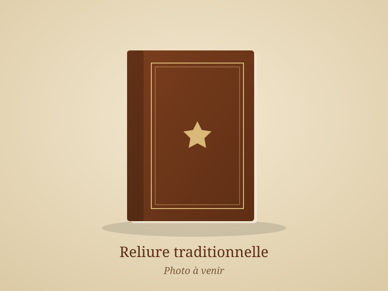
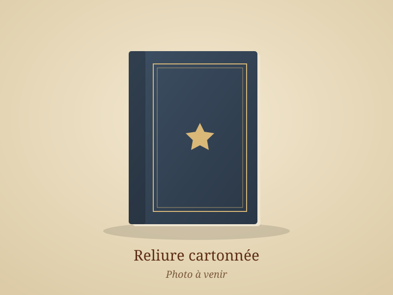
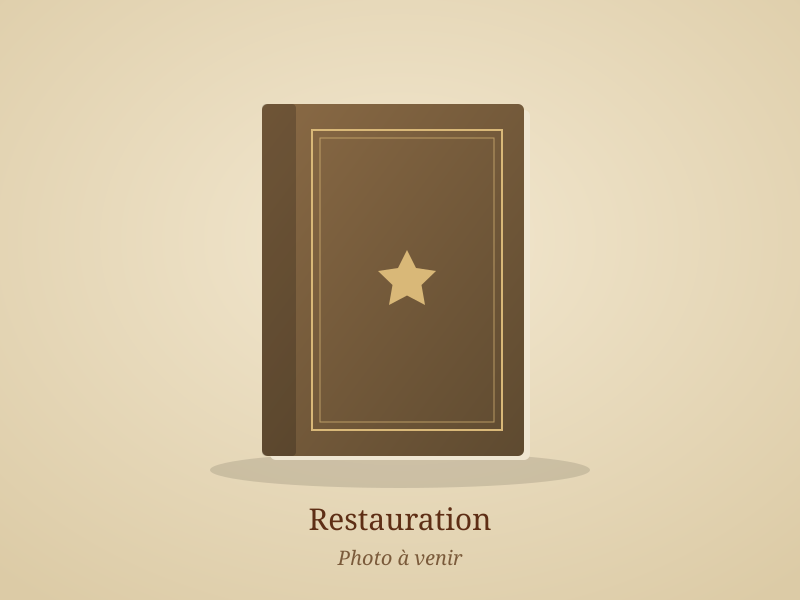
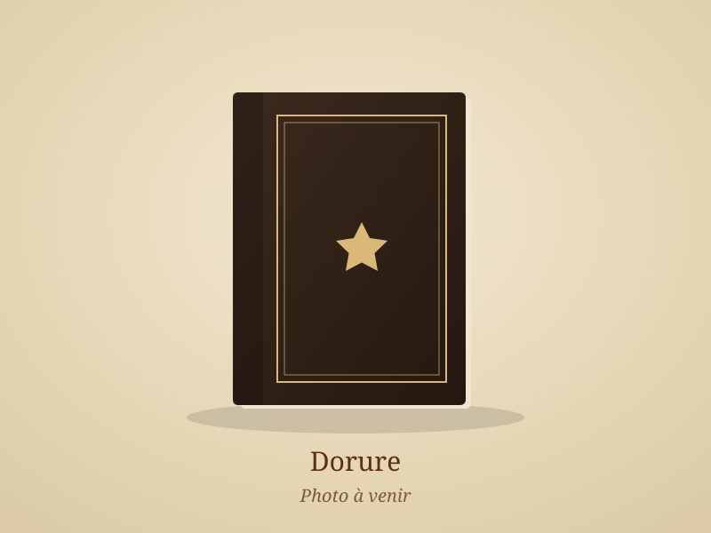
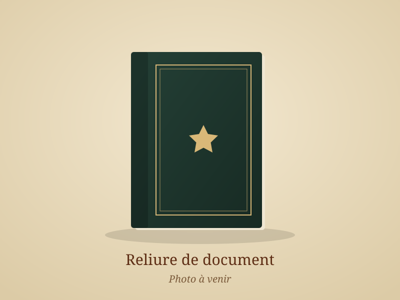

Galerie
Réalisations
Un aperçu des travaux sortis de l’atelier. Touchez une photo pour l’agrandir.
-

Reliure Reliure d’art en plein cuir, décor doré
-

Restauration Restauration d’un livre ancien : couture et couvrure reprises
-

Dorure Titre et filets dorés à la feuille d’or
-

Reliure Demi-reliure cuir à coins, papier marbré
-

Reliure Reliure cartonnée toilée
-

Restauration Consolidation de pages et reprise des coins
-
Reliure Registre relié, titre au dos
-

Dorure Décor aux petits fers
-

Reliure Mémoire relié, titre doré


Chaque ouvrage est unique
Les tarifs sont établis sur devis, gratuitement, selon l’ouvrage, son état et la finition souhaitée. N’hésitez pas à passer à l’atelier ou à appeler pour en parler.